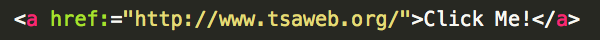
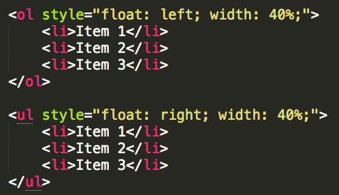

Hyperlinks and Lists
Hyperlinks- Hyperlinks have the ability to take the user to a different webpage by clicking on it. The most common attribute used with hyperlinks is href, which includes the address to the webpage it will take the user to.
Below is an example of a hyperlink and the code for it.

Lists- HTML supports two kinds of lists: ordered lists and unordered lists. Within lists each individual list item has its own tag. The unordered list is designated with a ul tag and the subsequent listed items go in li tags. An ordered lists would start with an ol tag and be followed by li tags that list the items that are desired to be listed.
Below is an example of this, and the code used to make the list appear the way it does. (Don't worry about that little style, you'll learn more about that once you get to CSS!)
- Item 1
- Item 2
- Item 3
- Item 1
- Item 2
- Item 3
